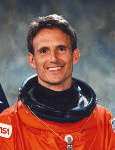

Lyndon B. Johnson Space Center
Houston, Texas 77058
|
National Aeronautics and Space Administration Lyndon B. Johnson Space Center Houston, Texas 77058 |
 |
Biographical Data |
||
J. M. Linenger, M.D., M.S.S.M., M.P.H., Ph.D. (Captain, Medical Corps, USN, Ret.)
NASA Astronaut (former)
PERSONAL DATA: Born January 16, 1955, and raised in Eastpointe, Michigan. Married to the former Kathryn M. Bartmann of Arlington Heights, Illinois. They have four children.
EDUCATION: Graduated from East Detroit High School, Eastpointe, Michigan, in 1973; received a bachelor of science degree in bioscience from the U.S. Naval Academy in 1977; a doctorate in medicine from Wayne State University in 1981; a master of science degree in systems management from University of Southern California in 1988; a master of public health degree in health policy from the University of North Carolina in 1989; a doctor of philosophy degree in epidemiology from the University of North Carolina in 1989.
ORGANIZATIONS: The U.S. Naval Academy, University of Southern California, Wayne State University School of Medicine, and University of North Carolina Alumni Associations; the Association of Naval Aviation; the U. S. Navy Flight Surgeons Association; the Aerospace Medicine Association; the American Medical Association; the American College of Preventive Medicine; the Society of U.S. Navy Preventive Medicine Officers; and the American College of Sports Medicine. Linenger is board certified in preventive medicine.
SPECIAL HONORS: Awarded the Meritorious Unit Commendation; Navy Unit Commendation; National Defense Service Medal; Navy Battle Efficiency Award; Navy Commendation Medal with gold star; and 2 NASA Space Flight Medals. Top graduate, Naval Flight Surgeon Training and Naval Safety Officer's School. Elected to Phi Kappa Phi and Alpha Omega Alpha academic honor societies. Distinguished Alumni Award, Wayne State University School of Medicine.
EXPERIENCE: Linenger graduated from the U.S. Naval Academy and proceeded directly to medical school. After completing surgical internship training at Balboa Naval Hospital, San Diego, California, and aerospace medicine training at the Naval Aerospace Medical Institute, Pensacola, Florida, he served as a naval flight surgeon at Cubi Point, Republic of the Philippines. He was then assigned as medical advisor to the Commander, Naval Air Forces, U.S. Pacific Fleet, San Diego. After completing doctorate-level training in epidemiology, Linenger returned to San Diego as a research principal investigator at the Naval Health Research Center. He concurrently served as a faculty member at the University of California-San Diego School of Medicine in the Division of Sports Medicine.
NASA EXPERIENCE: Linenger joined astronaut selection Group XIV at the Johnson Space Center in August 1992. He flew on STS-64 (September 9-20, 1994) aboard the Space Shuttle Discovery. Mission highlights included: first use of lasers for environmental research; deployment and retrieval of a solar science satellite; robotic processing of semiconductors; use of an RMS-attached boom for jet thruster research; first untethered spacewalk in 10 years to test a self-rescue jetpack. In completing his first mission, Linenger logged 10 days, 22 hours, 51 minutes in space, completed 177 orbits, and traveled over 4.5 million miles.
Following his first mission, he began training at the Cosmonaut Training Center in Star City, Russia, in preparation for a long-duration stay aboard the Russian Space Station Mir. All training was conducted using the Russian language, and consisted of learning all Mir space station systems (life support/electrical/communication/attitude control/computer systems), simulator training, Soyuz launch/return vehicle operations, and spacewalk water tank training. He also trained as chief scientist to conduct the entire US science program, consisting of over one-hundred planned experiments in various disciplines. A sampling includes: medicine (humoral immunity, sleep monitoring, radiation dosimetry), physiology (spatial orientation/performance changes during long duration flight), epidemiology (microbial surface sampling), metallurgy (determination of metal diffusion coefficients), oceanography/geology/limnology/physical science (photographic survey (over 10,000 photos) of the planet), space science (flame propagation), microgravity science (behavior of fluids, critical angle determination).
Linenger launched aboard U.S. Space Shuttle Atlantis (STS-81) on January 12, 1997, remained onboard the space station with two Russian cosmonauts upon undocking of the Shuttle, and eventually returned upon a different mission of Atlantis (STS-84) on May 24, 1997-spending a total of 132 days, 4 hours, 1 minute in space-the longest duration flight of an American male at that time.
During his stay aboard space station Mir, Linenger became the first American to conduct a spacewalk from a foreign space station and in a non-American made spacesuit. During the five hour walk, he and his Russian colleague tested for the first time ever the newly designed Orlan-M Russian-built spacesuit, installed the Optical Properties Monitor (OPM) and Benton dosimeter on the outer surface of the station, and retrieved for analysis on Earth numerous externally-mounted material-exposure panels.
The three crewmembers also performed a "flyaround" in the Soyuz spacecraft-undocking from one docking port of the station, manually flying to and redocking the capsule at a different location-thus making Linenger the first American to undock from a space station aboard two different spacecraft (U.S. Space Shuttle and Russian Soyuz).
While living aboard the space station, Linenger and his two Russian crewmembers faced numerous difficulties-the most severe fire ever aboard an orbiting spacecraft, failures of onboard systems (oxygen generator, carbon dioxide scrubbing, cooling line loop leaks, communication antenna tracking ability, urine collection and processing facility), a near collision with a resupply cargo ship during a manual docking system test, loss of station electrical power, and loss of attitude control resulting in a slow, uncontrolled "tumble" through space. In spite of these challenges and added demands on their time (in order to carry out the repair work), they still accomplished all mission goals-spacewalk, flyaround, and one-hundred percent of the planned U.S. science experiments.
In completing the nearly five month mission, Linenger logged approximately 50 million miles (the equivalent of over 110 roundtrips to the Moon and back), more than 2000 orbits around the Earth, and traveled at an average speed of 18,000 miles per hour. Because of the flawless launch, docking, undocking, and landing of the Space Shuttle Atlantis (STS-84) crew-exchange mission, he made it back to the planet just in time to be reunited with Kathryn and to witness the birth of their second son.
Linenger retired from NASA and the U.S. Navy in January 1998, and presently lives with his family in Northern Michigan.
AUGUST 2001
This is the only version available from NASA. Updates must be sought direct from the above named individual.
{kind=link}